Sobre mí
Estudié diseño industrial en la Universidad Nacional del Litoral y publicidad estratégica y digital en Ariel University. Trabajé en una agencia de Malta, desarrollé una web app para el Centro Comercial e Industrial de Santo Tomé y desde 2024 trabajo con Kol Accesorios, una cadena argentina de accesorios. Además ya creé mi propio producto de medición, que personalizo a medida para mis clientes.
Experiencia
| Rol | Dónde | Cuándo |
|---|---|---|
| Desarrollo de marketing e integración de IA (pasantía) | Riley, Israel: un compañero de equipo con IA para agentes inmobiliarios de Nueva York. Investigación de mercado y el plan de salida al mercado, en equipo; en curso. Ver el caso | 2026 |
| Consultora freelance de campañas y medición | Kol Accesorios, una cadena argentina de accesorios. Ver el caso | 2024 – hoy |
| Creación de un producto propio de medición de campañas | Para Kol Accesorios. Ver el caso | 2025 – hoy |
| Diseño, desarrollo y medición de una web app | Centro Comercial e Industrial de Santo Tomé. Ver el caso | 2023 – 2025 |
| Head Designer | Communiqué Ltd, Malta. Diseño para redes, web y campañas de 30 marcas, con tres pasantes a mi cargo. Ver el caso | 2022 – 2023 |
| Diseño UX/UI del onboarding (freelance) | Clash, una app de beneficios de Rosental Inversiones, Rosario. Ver el caso | 2021 |
| Diseño UX/UI (pasantía) | Waycare Technologies, una plataforma de gestión de tráfico con IA. Ver el caso | 2019 |
Grupos y empresas para las que trabajé
Tobin Capital GroupRosental InversionesForvis MazarsSt James HospitalMuseo de Arte Contemporáneo (UNL)Boldt Group (Bplay)
Formación
| Título | Institución | Cuándo |
|---|---|---|
| AI Marketing Pro, con Google | Reichman University, Israel | 2026, en curso |
| MA en publicidad estratégica y digital | Ariel University, Israel | 2024 – 2026 |
| Licenciatura en diseño industrial | Universidad Nacional del Litoral, Argentina | 2014 – 2022 |
| Certificado de diseño UX/UI | Codehouse | 2019 |
Certificados
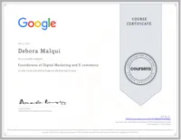
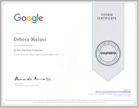
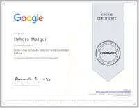
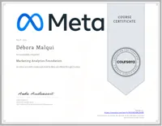
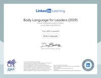
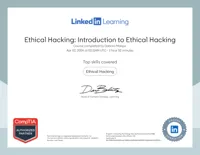
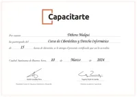
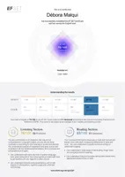
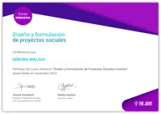
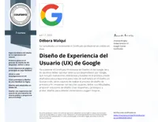
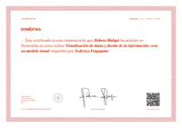
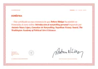
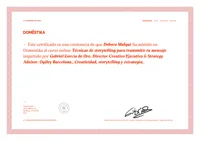
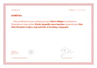
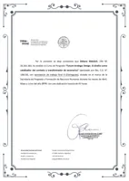
Trabajos académicos y pasantías
- Relaciones afectivas en 2050: un escenario de futuro sobre la inteligencia artificial y los vínculos, con el método ViP (posgrado UNL, con Stefano Trevisan). Ver el casoExpuesto en IA@Litoral · 2019
- Adidas Pulse: estrategia SEO 2.0 + AIO (equipo de tres). Ver el casoDistinción académica · 96
- i24NEWS en India: escucha social de los medios indios en inglés (grupo de 9), un brief creativo y la campaña «From Noise to Knowledge» (grupo de 4). Ver el casoDistinción académica · 94
- Skyline Residences: un plan de medios de seis meses y ₪10 millones para un lanzamiento inmobiliario de lujo en Tel Aviv (grupo de 3). Ver el caso
- CeraVe «Find Your Balance»: una mini campaña sobre el bienestar emocional de adolescentes (grupo de 3). Ver el caso
- «Bring Them Home Now»: un análisis del activismo visual en la crisis de rehenes (grupo de 3). Ver el caso
- «The Engagement Paradox»: un ensayo sobre la responsabilidad algorítmica y la autonomía del usuario (individual). Ver el casoDistinción académica · 97
- Wix: un plan de comunicación integrada de seis meses, con 70 acciones en un Gantt de 24 semanas (individual). Ver el caso
- SEGA: una campaña de creadores en tres niveles para el lanzamiento de «Sonic Generations Recharged» (grupo de 2). Ver el caso
Idiomas
Español (nativo), inglés (fluido) y hebreo (fluido).
Just for funbrandsLogos y guías de marca, para hojear.